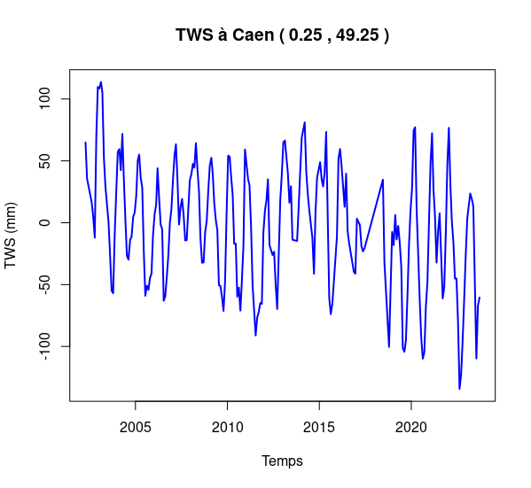
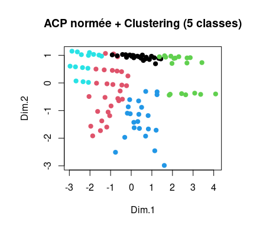

Amr ZAKI SALIH
Élève-Ingénieur en Génie Mathématique (GM5) à l'INSA Rouen Normandie
Passionné par la convergence entre les modèles mathématiques rigoureux et l'intelligence artificielle. Je conçois des solutions prédictives et computationnelles allant du traitement de données satellitaires complexes (InSAR & GRACE avec le Cerema) aux systèmes d'IA multimodaux (OCR LaTeX, tuteur intelligent) et au calcul scientifique haute performance.

Les 4 Projets Phares
Projets majeurs démontrant la modélisation mathématique, l'apprentissage statistique, le traitement de données satellitaires et l'IA multimodale.
ITIM — Système de Tutorat Intelligent de Mathématiques
Plateforme d'apprentissage combinant un canvas d'écriture manuscrite infini, une transcription VLM en LaTeX temps réel et un agent tuteur conversationnel basé sur la modélisation cognitive ACT-R.
- Transcription OCR & VLM : Reconnaissance optique d'expressions mathématiques manuscrites converties en LaTeX formel.
- Apprentissage de règles d'erreurs (Buggy Rules) : Détection incrémentale des conceptions erronées récurrentes chez l'élève sans donner la solution.
Simulation Satellite & Trajectoire Autonome
Moteur de simulation orbitale physique et de planification autonome de trajectoires avec modélisation gravitationnelle à $N$-corps et évitement de débris spatiaux.
- Physique orbitale $N$-corps : Simulation des forces d'attraction multiples et perturbations gravitationnelles.
- Algorithme d'évitement en temps réel : Détection géométrique des cônes de collision et génération d'impulsions de poussée optimales.
Sécheresse des Sols & Subsidence : EGMS x GRACE
Étude statistique spatio-temporelle en R du couplage entre le retrait-gonflement des argiles (subsidence radar millimétrique EGMS InSAR) et les variations de stockage de l'eau souterraine (gravimétrie satellite GRACE).

- Partenariat officiel Cerema : Traitement de millions de points radar de déplacement vertical du sol à l'échelle européenne.
- Modélisation de décalage de phase : Analyse de corrélation croisée entre le déficit hydrique des nappes et le tassement mécanique des sols.
Classification Non Supervisée & ACP Biomédicale
Analyse exploratoire et modélisation prédictive en R : Analyse en Composantes Principales (ACP) normée/non-normée et Classification Ascendante Hiérarchique (CAH / Ward) sur données d'obésité et marqueurs de santé.

- Réduction de dimension rigoureuse : Analyse spectrale de la matrice de corrélation, règle de Kaiser et scree plot d'inertie.
- Segmentation phénotypique : Découpage optimal de l'arbre hiérarchique selon le critère de perte d'inertie inter-classes.
Autres Projets & Travaux Spécialisés
Travaux en calcul haute performance, équations différentielles, analyse modale et génie logiciel.
Solveurs de Systèmes Linéaires (Gauss-Seidel HPC)
Résolution de grands systèmes creux $Ax=b$. Étude du rayon spectral de la matrice d'itération, preuve théorique de convergence et benchmark haute performance Fortran 90 vs Python.
Intégration Numérique : Verlet vs Runge-Kutta
Comparaison d'intégrateurs numériques pour systèmes dynamiques hamiltoniens. Mise en évidence de la conservation de l'énergie et de la stabilité de l'algorithme de Verlet face à RK4.
Déformation & Analyse Modale de Treillis
Modélisation éléments finis d'un pont en treillis élastique. Calcul de la déformation statique sous charges et détermination des modes propres de vibration (valeurs et vecteurs propres).
Méthodes Directes & Conditionnement (LU, Cholesky)
Implémentation de factorisations matricielles directes (Gauss sans/avec pivot partiel, LU, Cholesky) et analyse d'erreur numérique liée au conditionnement des matrices.
Système de Gestion de Dictionnaire Dynamique en C
Moteur en ligne de commande avec structures de données chaînées imbriquées, indexation alphabétique hachée, allocation dynamique stricte et absence totale de fuites mémoires (Valgrind).
Jeu de Chiffres Croisés & Moteur de Règles
Jeu de plateau arithmétique combinatoire au tour par tour. Architecture objet modulaire, validation automatique de contraintes d'opérations et interface interactive.
Compétences & Technologies
Un profil polyvalent associant modélisation théorique, exploitation de données massives et développement d'applications logicielles.
Data Science & IA
- • Vision-Language Models (VLM)
- • Machine Learning Non Supervisé (ACP, CAH)
- • Traitement de Séries Temporelles
- • Modélisation Cognitive (ACT-R)
- • SymPy (Calcul Formel) & OCR LaTeX
- • Scikit-learn, FactoMineR
Mathématiques & HPC
- • Algèbre Linéaire Creuse ($Ax=b$)
- • EDO & Méthodes Symplectiques (Verlet, RK)
- • Analyse Spectrale & Conditionnement
- • Mécanique Céleste & Problème N-Corps
- • Méthodes des Éléments Finis (Treillis)
- • Fortran 90, MATLAB, SciPy
Données Satellitaires
- • Radar InSAR (Copernicus EGMS L3)
- • Gravimétrie Spatiale (Mission GRACE)
- • Détection de Déplacement Millimétrique
- • Analyse Statistique Spatio-temporelle
- • Visualisation Avancée (ggplot2, R)
- • NetCDF, HDF5, Formats Spatiaux
Ingénierie Logicielle
- • Python 3, R, Java, C, Fortran
- • FastAPI, Uvicorn, WebSockets
- • React 19, Vite, TypeScript
- • Git, GitHub Actions, Linux (Ubuntu)
- • Structures de Données & Gestion Mémoire
- • Conception Orientée Objet (POO)
INSA Rouen Normandie
Diplôme d'Ingénieur — Département Génie Mathématique (GM)
GM5 — Année de Spécialisation & Projet de Fin d'Études (En cours)
ActuelDeep Learning avancé, détection d'anomalies, méta-apprentissage, régression non-linéaire, préparation du Projet de Fin d'Études (PFE).
GM4 — Modélisation Stochastique, EDP & Systèmes Complexes
Processus de Markov, Équations aux Dérivées Partielles (EDP), Séries Temporelles, Projet satellitaire InSAR/GRACE avec le Cerema, Simulation spatiale Java.
GM3 — Mathématiques Appliquées & Analyse de Données
Statistique exploratoire multivariée (ACP, CAH), Analyse Numérique Matricielle (Gauss-Seidel, Cholesky), Structures de données en C, Optimisation continue.
STPI — Classes Préparatoires Intégrées
Mathématiques fondamentales (Analyse, Algèbre), Physique, Algorithmique et Programmation impérative.
Vous recrutez un profil Data Science & IA ?
Je suis disponible pour un Stage de Fin d'Études (PFE) de 6 mois à partir de Février / Mars 2026, avec perspective de pré-embauche. N'hésitez pas à me contacter pour échanger sur vos problématiques ou convenir d'un entretien technique.